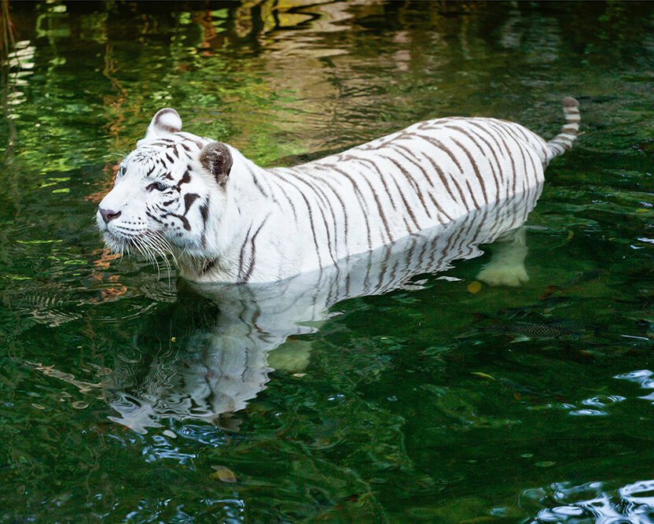

Beyaz kaplan, Bengal kaplanının nadir görülen genetik varyasyonu olup turuncu yerine beyaz kürk üzerinde siyah çizgileriyle tanınır; genellikle Hindistan kökenli Bengal kaplanlarında ortaya çıkan bu özellik, albinizm değil, resesif bir genin etkisiyle oluşur; erkekleri 200–250 kg’a kadar ağırlığa ulaşabilirken dişiler daha küçüktür, ortalama ömürleri doğada 12–15 yıl, esaret altında ise 20 yıla kadar çıkabilir; güçlü kasları ve keskin dişleri sayesinde avlarını sessizce takip eder ve ani saldırılarla etkisiz hale getirir, beslenmesinde geyik, yaban domuzu ve diğer orta büyüklükteki memeliler yer alır; yalnız yaşayan bir türdür ve geniş bölgeleri sahiplenerek diğer kaplanları uzak tutar; günümüzde doğal ortamda çok az sayıda bulunur, çoğu birey hayvanat bahçelerinde veya koruma merkezlerinde yaşar; kültürel açıdan ise saflık, güç ve doğanın gizemli güzelliğinin sembolü olarak görülür.